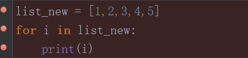
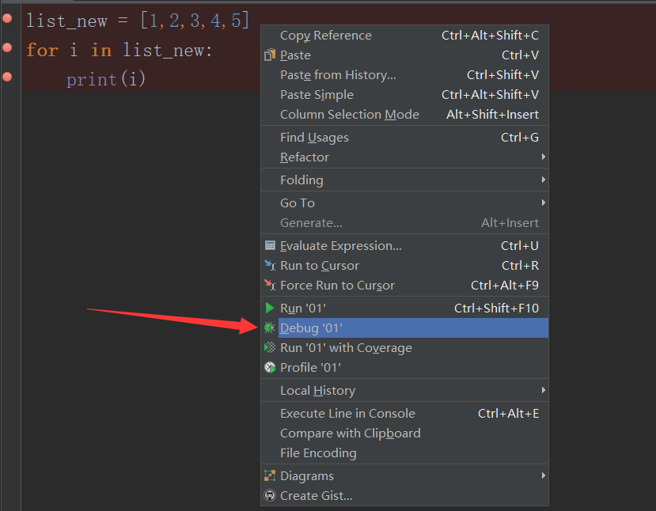
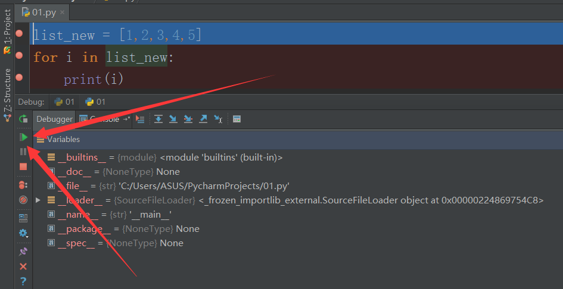
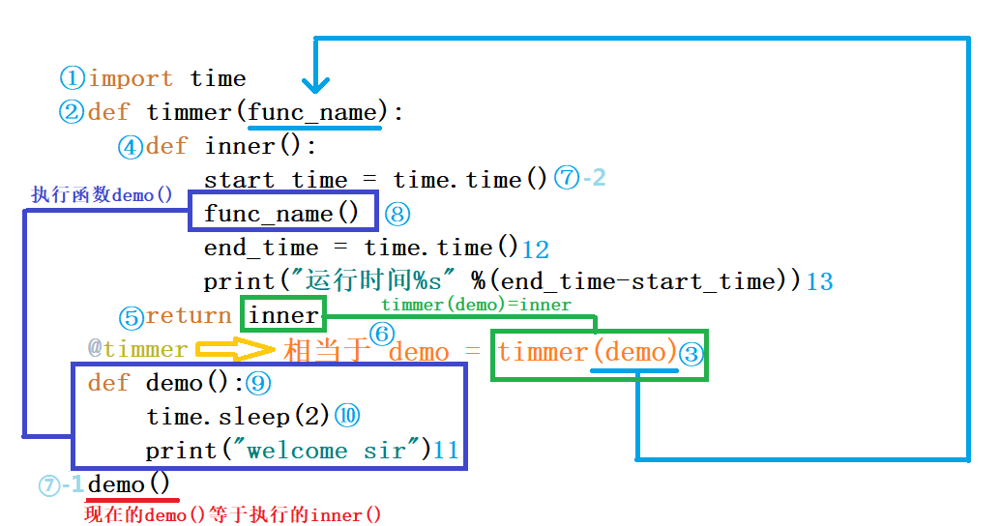
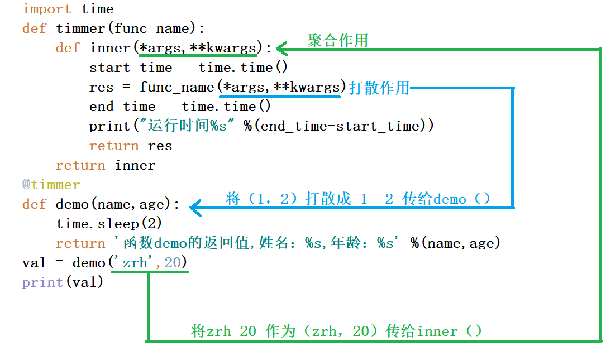
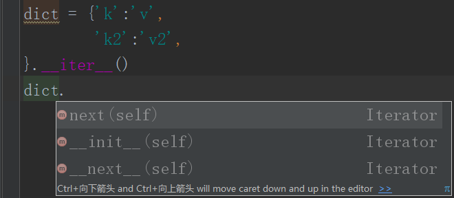
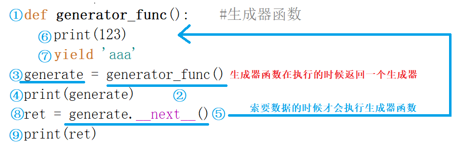
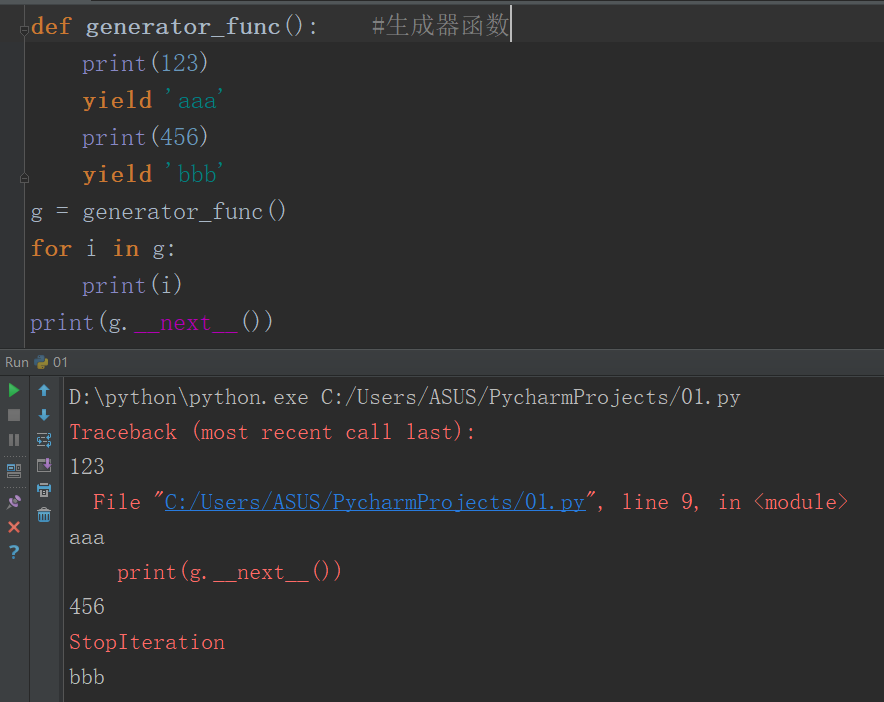
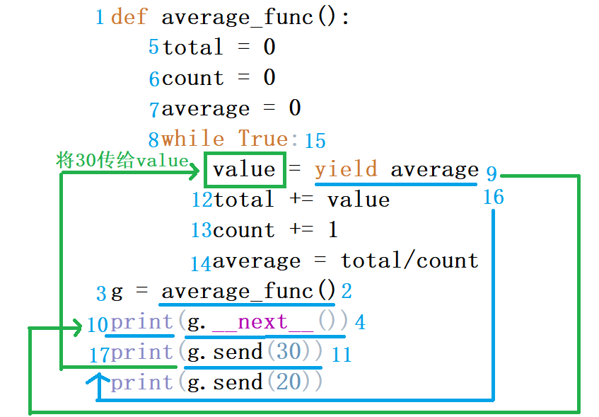

目录：
程序出问题的时候可以用debug来看一下代码运行轨迹，然后找找问题在哪里
1.先给即将debug的代码打上断点：

2.打完断点之后右键点击debug：

3.然后依次点击开始按钮让程序开始一步步运行：

定义：装饰器为其他函数添加附加功能，本质上还是一个函数
原则：①不修改被修饰函数的源代码
②不修改被修饰函数的调用方式
有这样一个函数：demo()
先导入时间模块，然后函数执行时先睡两秒，在执行打印
1 import time
2 def demo():
3 time.sleep(2)
4 print("welcome sir")
5 demo()现在想为demo()函数添加一个统计函数运行时间的功能，但是要遵循开放封闭原则
初步思想：
1 import time
2 def demo():
3 start_time = time.time()
4 time.sleep(2)
5 print("welcome sir")
6 end_time = time.time()
7 print("运行时间%s" %(end_time-start_time))
8 demo()这样就完美解决了，但是，我们要用可持续发展的眼光来看，假如有十万个代码，我们这样一个一个添加，你不加班谁加班？
这个时候我们可以用函数的思维来解决
进步思想：
1 import time
2 def demo():
3 time.sleep(2)
4 print("welcome sir")
5 def timmer(func_name):
6 def inner():
7 start_time = time.time()
8 func_name()
9 end_time = time.time()
10 print("运行时间%s" %(end_time-start_time))
11 return inner
12 res = timmer(demo)
13 res()这样看起来非常Nice，用到了高阶函数，嵌套函数，函数闭包，但是我们违反了开放封闭原则，这个时候把res 改成 demo 就可以了
在这里有一个命令，可以直接略过这个赋值，让代码看起来更美观，执行效率更高
1 import time
2 def timmer(func_name):
3 def inner():
4 start_time = time.time()
5 func_name()
6 end_time = time.time()
7 print("运行时间%s" %(end_time-start_time))
8 return inner
9 @timmer
10 def demo():
11 time.sleep(2)
12 print("welcome sir")
13 demo()ok，代码完成，这其实就是一个函数装饰器，我们来解释一下代码运行顺序

为装饰器加上返回值：
1 import time
2 def timmer(func_name):
3 def inner():
4 start_time = time.time()
5 res = func_name()
6 end_time = time.time()
7 print("运行时间%s" %(end_time-start_time))
8 return res
9 return inner
10 @timmer
11 def demo():
12 time.sleep(2)
13 return '函数demo的返回值'
14 val = demo()
15 print(val)有参数的装饰器：
1 import time
2 def timmer(func_name):
3 def inner(*args,**kwargs):
4 start_time = time.time()
5 res = func_name(*args,**kwargs)
6 end_time = time.time()
7 print("运行时间%s" %(end_time-start_time))
8 return res
9 return inner
10 @timmer
11 def demo(name,age):
12 time.sleep(2)
13 return '函数demo的返回值,姓名：%s,年龄：%s' %(name,age)
14 val = demo('zrh',20)
15 print(val)图示流程：

可迭代协议：只要包括了"_iter_"方法的数据类型就是可迭代的
1 print([1,2,3].__iter__()) #打印结果：<list_iterator object at 0x000002E7F803DE88>iterable 形容词 可迭代的
1 from collections import Iterable #检测一个对象是否可迭代
2 print(isinstance('aaa',Iterable))
3 print(isinstance(123,Iterable))
4 print(isinstance([1,2,3],Iterable))迭代器协议：迭代器中有 __next__ 和 __iter__方法
iterator 名词 迭代器，迭代器 就是实现了能从其中一个一个的取出值来

检测参数是不是个迭代器：
1 from collections import Iterator
2 print(isinstance(lst_iterator,Iterator))
3 print(isinstance([1,2,3],Iterator))在python里，目前学过的所有的可以被for循环的基本数据类型都是可迭代的，而不是迭代器。
迭代器包含可迭代对象
可迭代对象转换为迭代器：
可迭代对象._iter_() 这样就变成可一个迭代器
lise_case = [1,2,3].__iter__()迭代器存在的意义：
1.能够对python中的基本数据类型进行统一的遍历,不需要关心每一个值分别是什么
2.它可以节省内存 —— 惰性运算
for循环的本质：
1 lst_iterator = [1,2,3].__iter__()
2 while True:
3 try:
4 print(lst_iterator.__next__())
5 except StopIteration:
6 break只不过for循环之后如果参数是一个可迭代对象，python内部会将可迭代对象转换成迭代器而已。
Iterator 迭代器
Gerator 生成器
生成器其实就是迭代器，生成器是用户写出来的
1 def generator_func(): #生成器函数
2 print(123)
3 yield 'aaa'
4 generate = generator_func()
5 print(generate)
6 print(generate.__next__())
7 # 打印结果：
8 # <generator object generator_func at 0x0000018F3942E8C8>
9 # 123
10 # aaa带yield关键字的函数就是生成器函数，包含yield语句的函数可以用来创建生成器对象，这样的函数也称为生成器函数。
yield语句与return语句的作用相似，都是用来从函数中返回值，return语句一旦执行会立刻结束函数的运行
而每次执行到yield语句并返回一个值之后会暂停或挂起后面的代码的执行，下次通过生成器对象的__next__()、for循环或其他方式索要数据时恢复执行
生成器具有惰性求值的特点
生成器运行顺序：

生成器问题注意1：
1 def generator_func(): #生成器函数
2 print(123)
3 yield 'aaa'
4 print(456)
5 yield 'bbb'
6 ret_1 = generator_func().__next__()
7 print(ret_1)
8 ret_2 = generator_func().__next__()
9 print(ret_2)
10 # 输出结果：
11 # 123
12 # aaa
13 # 123
14 # aaa
15 def generator_func(): #生成器函数
16 print(123)
17 yield 'aaa'
18 print(456)
19 yield 'bbb'
20 generate_1 = generator_func()
21 ret_1 = generate_1.__next__()
22 print(ret_1)
23 ret_2 = generate_1.__next__()
24 print(ret_2)
25 # 输出结果：
26 # 123
27 # aaa
28 # 456
29 # bbb第6行和第8行相当于创建了两个生成器，第20行创建了一个生成器，21行和23行都用的是第20行创建的生成器，所以输出结果不一样
生成器问题注意2：

for循环完了之后生成器数据就取完了，再继续print数据的话，就会报错，因为没有数据可以读了。
一个函数有两个以上的yield，才算一个必要的生成器，如果只有一个yield，那还不如老老实实的去写return
生成器实例：
需求：写一个实时监控文件输入的内容，并将输入内容返回的函数
1 def tail(filename):
2 f = open(filename,encoding='utf-8')
3 f.seek(0,2)
4 while True:
5 line = f.readline()
6 if not line:continue
7 yield line
8 tail_g = tail('file_1')
9 for line in tail_g:print(line,end='')生成器send用法：
1.send和next工作的起止位置是完全相同的
2.send可以把一个值作为信号量传递到函数中去
3.在生成器执行伊始，只能先用next
4.只要用send传递参数的时候，必须在生成器中还有一个未被返回的yield
1 def average_func():
2 total = 0
3 count = 0
4 average = 0
5 while True:
6 value = yield average
7 total += value
8 count += 1
9 average = total/count
10 g = average_func()
11 print(g.__next__())
12 print(g.send(30))
13 print(g.send(20))代码解释：

装饰器生成激活函数装置：
1 def wrapper(func):
2 def inner(*args,**kwargs):
3 g = func(*args,**kwargs)
4 g.__next__()
5 return g
6 return inner
7 @wrapper
8 def average_func():
9 total = 0
10 count = 0
11 average = 0
12 while True:
13 value = yield average
14 total += value
15 count += 1
16 average = total/count
17 g = average_func()
18 print(g.send(30))利用函数装饰器写了一个函数激活装置，就不用在18行之前的send前使用 next 了，next 在第4行已经实现了。